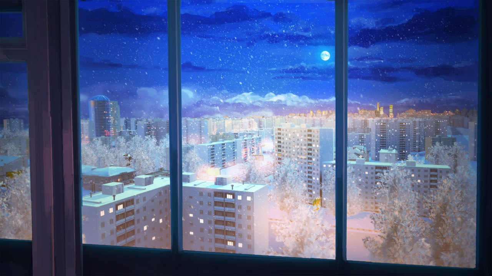
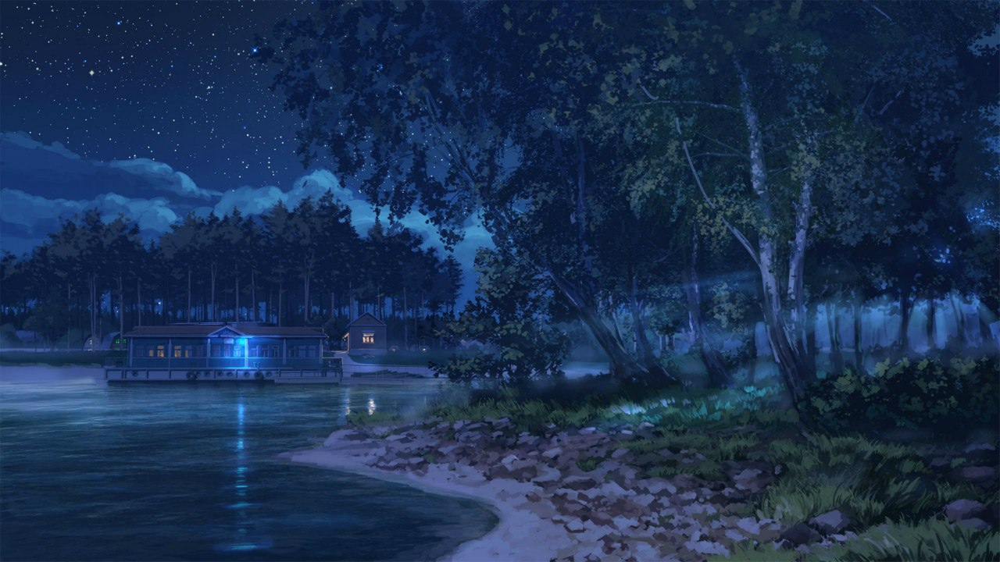
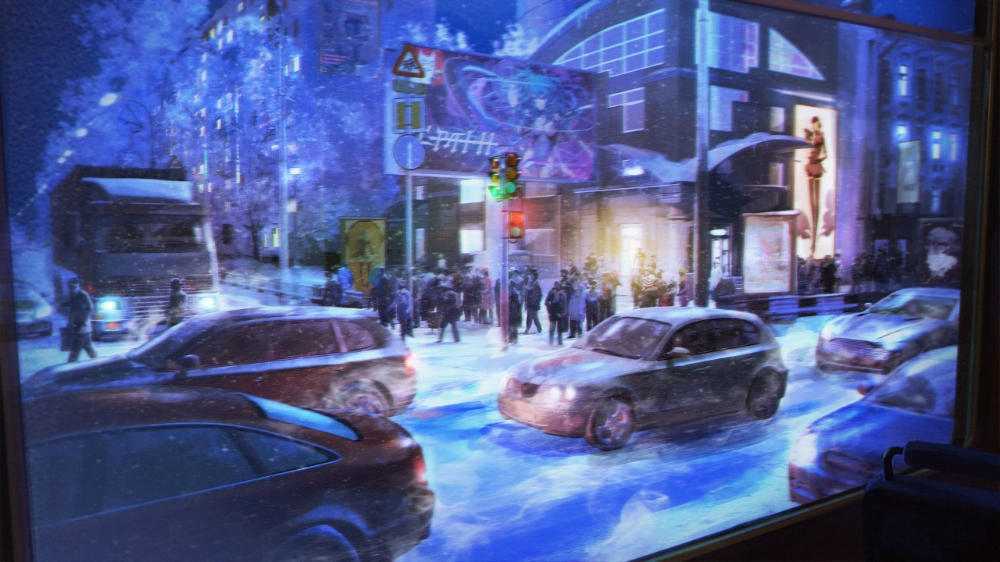
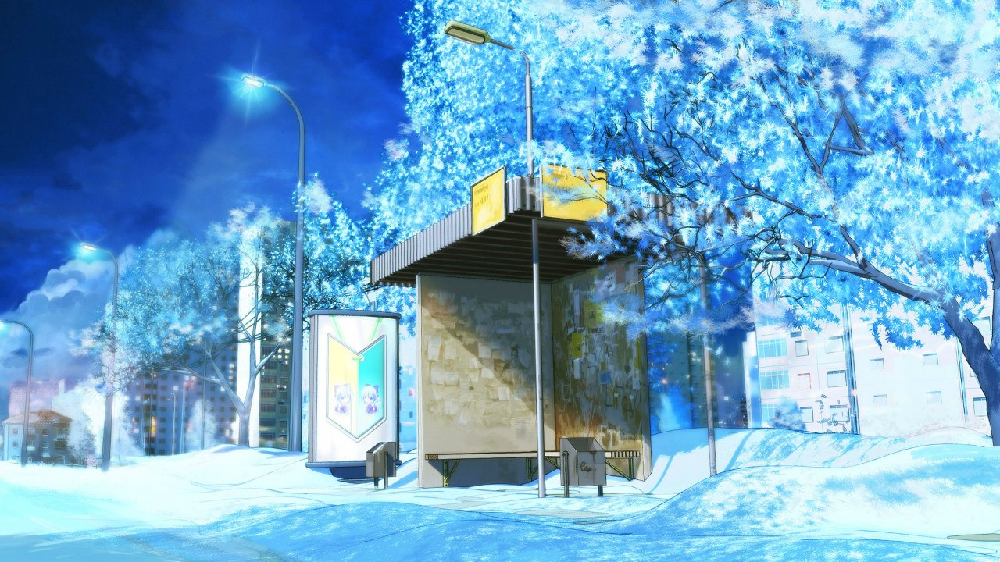
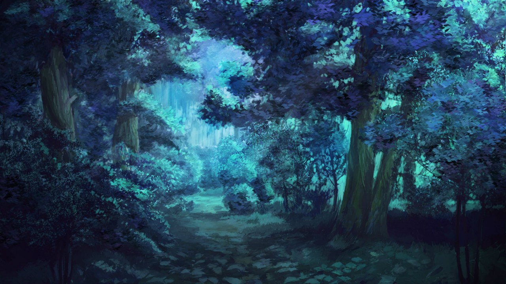
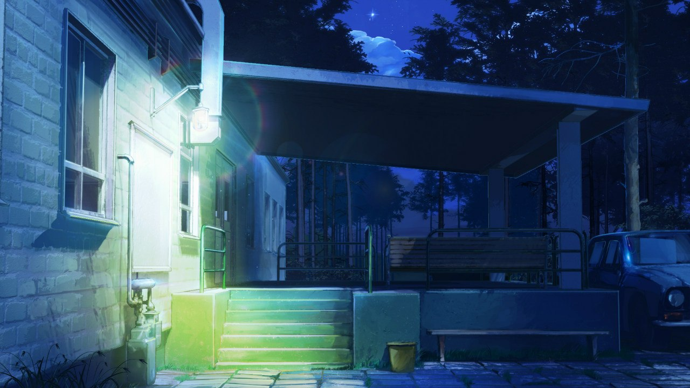
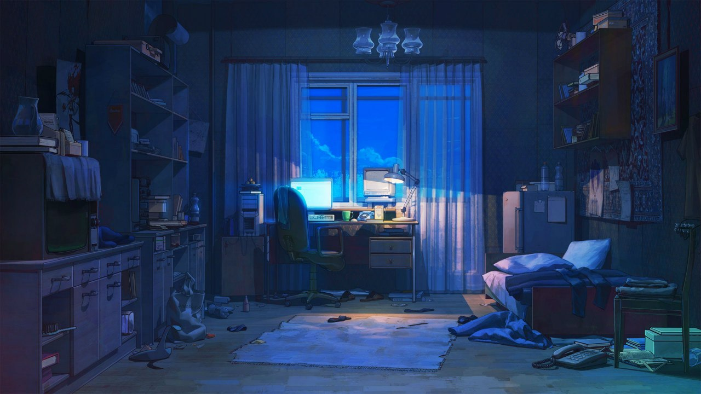

-
Фритрек и нулевой спринт: Подготовка к работе
freedom
Это было самое начало пути. На этом этапе важно было проникнуться основами и настроиться на учёбу. И, возможно, подумать, как новые знания могут повлиять на ваше будущее.
Начало обучения в первую очередь запомнилось ощущением свободы. В тот момент мне пришлось сделать выбор - продолжить обучение в ВУЗе, на специальности которая меня не устраивала или выбрать мечту. И дело даже не в том, правильный выбор это или нет. Главное, что он был сделан.
-
1 спринт: Я — чистый лист
human На первых этапах мы работали со страхами и сомнениями, которые часто испытывают новички. Один из них — страх перед чистым листом. Это, конечно же, намного сложнее, чем боязнь куска бумаги. Часто за этим ощущением скрываются более глубокие вопросы: с чего начать? а вдруг будет слишком сложно? что, если я не справлюсь?
Решить с чего начать - всегда сложно. Однако, даже искуственный интеллект смог победить страх чистого листа. А я - человек!
-
1 спринт: А если не получится?
confidence Первый проект — позади! Но это всё ещё самое начало пути. Радость могла быстро померкнуть и смениться ожиданием провала. Или вы, наоборот, могли вдохновиться успехами и поверить в себя.
Сдав, наконец, проектную работу я выдохнул. Такого чувства самоуверенности во мне не было давно. О том, что у меня может не получиться я даже не задумывался. Моя уверенность в правильном выборе только усилилась. Казалось, что теперь я в силах свернуть горы.
-
2 спринт: Погоня за идеалом
inspiration На этом этапе вы уже достаточно разбирались в основах вёрстки, чтобы понять, как много ещё впереди. Вы могли попытаться погнаться за идеалом и понять, что он недостижим. А, может, вы вовсе и не подвержены перфекционизму и вместо того, чтобы сделать идеально, старались просто сделать.
Открыв первый урок второго спринта я понял, что силы сворачивать горы у меня пока нет. Забегая вперед, скажу, что такая ситуация ситуация происходит в начале каждого спринта и это лишь воодушевляет!
-
2 спринт: О тех, кто рядом
path Всё это время вы были не одиноки (хотя, возможно, иногда и чувствовали, что одни против целого мира). Вас окружали одногруппники, команда сопровождения и просто близкие люди, которым можно пожаловаться, если очередной макет просто так не поддавался. Осваивать что-то новое легче, когда рядом есть единомышленники, не правда ли?
У меня был и есть друг, который тоже обучается в на фронта. Каждый раз обсуждая с ним очередной закрытый проект меня поражает то, как по разному может быть устроено мышление у двух разных людей. Это только укрепляет понимание о том, что к одной цели можно прийти многими путями, каждый из которых не будет уступать другим по своей элегантности. Здесь также необходимо упомянуть труд моих любимых ревьюеров. Без ваших наставлений я бы не сдал ни одной работы! Спасибо, что вы есть!
-
3 спринт: Обходные стратегии
undo На этом курсе вы постоянно решали разные задачи. В какой-то момент вам могло показаться, что решения просто иссякли. Значит, пришло время посмотреть на задачу под другим углом.
Три раза я разрушал полностью сверстанный сайт, лишь из-за того, что на меня снисходило озарение, что можно сделать чуть-чуть, но лучше. Хорошо, что мы живем во время, когда можно нажать анду.
-
3 спринт: Когда опускаются руки
mindset Во время учёбы часто возникает чувство, когда не знаешь, за что хвататься. Вроде и проектную пора сдавать, и задачи хочется порешать, и в теории получше разобраться, и жизнь не забыть пожить. В такие моменты очень нужна концентрация. Вспомните, откуда вы её черпали.
Хоть я и вообще нережимный человек, но здесь мне помогло построение особого майндсета. Когда я прошёл урок и осознал всё, что прочитал - мне становится хорошо на душе. Привыкнув к этому ощущению энергия на учёбу материализуется сама собой.
-
«Сейчас я здесь»
5:39 AM Сейчас вы уже очень много знаете о вёрстке. Но это только начало. Во-первых, впереди ещё много материала про «красотищу». Во-вторых, с окончанием курса учёба не заканчивается. Вёрстка — это целый мир. И этот мир постоянно меняется. Познать его полностью не получится, но это тот случай, когда важен сам процесс познания. Ведь часто путь — и есть результат.
Чувствую, что сейчас 5 утра, а я уже устал писать о том, что чувствовал на разных этапах последних 3 месяцев. Могу лишь сказать, что сейчас у меня всё хорошо и я счастлив, чего желаю и тебе, господин ревьюер, который помимо проверки работы действительно решил прочитать плоды моей графомании.